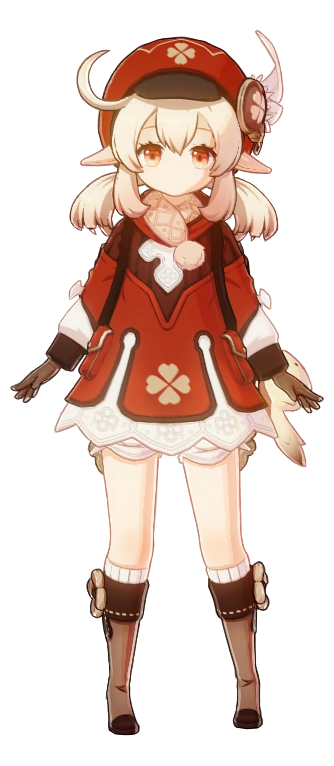
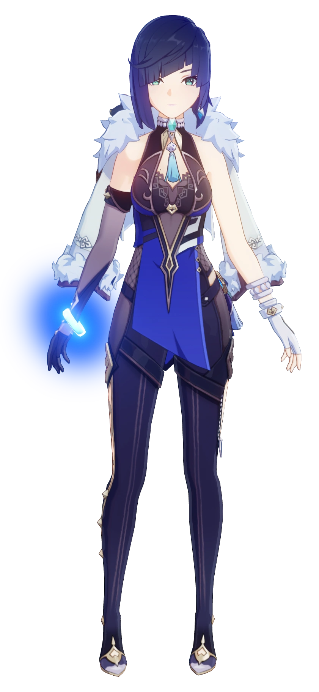
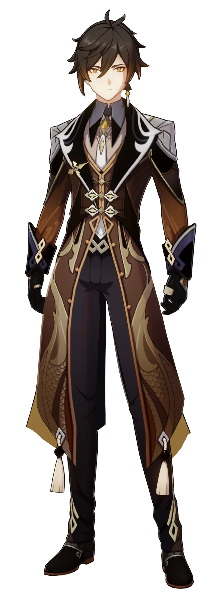

-
Klee
Catalizador/Pyro
Descrição
Klee is an energetic and outgoing girl who takes after her mother, Alice. She has a particular talent for creating explosives and is not fazed by the sound of explosions.
-
Yelan
Arco/Hydro
Descrição
Yelan is said to be quite secretive and mysterious; while claiming to work for the Ministry of Civil Affairs, she's frequently absent from work most of the year.
-
Zhongli
Lança/Geo
Descrição
Zhongli is a calm, reserved, and polite man, who holds an air of nostalgia. He knows much about Liyue's history and culture in part due to his time as the Geo Archon; like Venti, he has many experiences and memories, as he was a god well before The Seven even existed and one of the oldest still living in Teyvat.